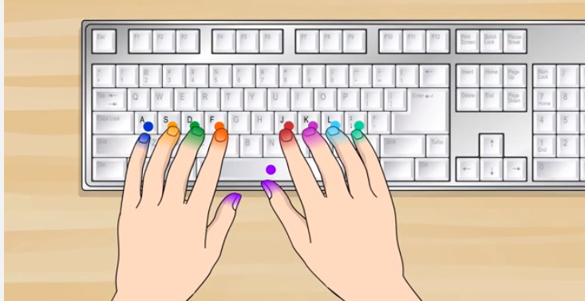
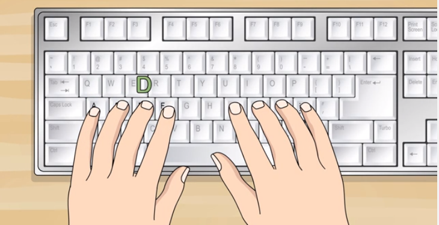
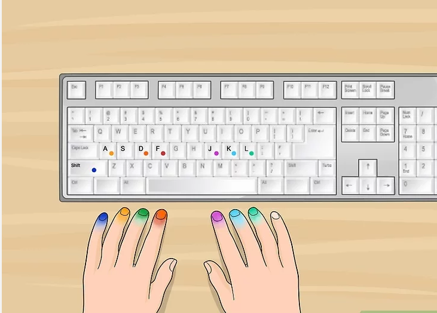
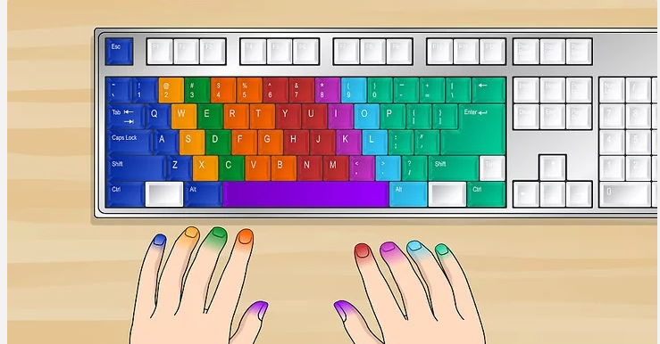
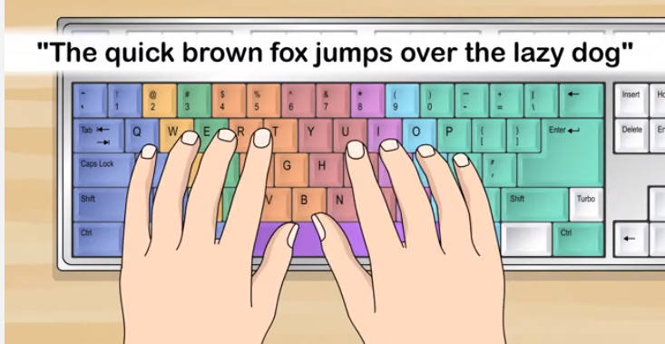

Typing Steps:
=>1
Place your fingers in the "home" position. That's the position in which your fingers will rest between keystrokes. No matter what part of the keyboard you're using, your fingers will always come back to rest in this position.[1]
Place your right index finger on the "J" key and let the other three fingers fall naturally onto the "K", "L" and ";" keys respectively. Place your left index finger on the "F" key and let the other three finger fall naturally onto the "D", "S", and "A" keys respectively. Both thumbs should rest on the space bar, but only the right thumb should key it.[2]
You should feel a raised bump on both the "F" and "J" keys. These will allow your fingers to find the home position without having to look at the keyboard.

=>2
Type each key from left to right. Type each letter covered by the fingers in the home position, going from left to right: a s d f j k l ;. You shouldn't have to move your fingers from their home positions. Just press the keys they are resting on.

=>3
Repeat, but this time capitalize. Repeat the step above, but this time in capital letters: A S D F J K L :. Use the shift key to capitalize rather than the caps lock. Push the shift key by moving only your nearest pinkie finger and pressing and holding it while pushing the desired letter with your other hand.
* In other words, when the letter you would like capitalized is typed with your left hand, you press the right shift key with your right pinkie.
* When the letter you would like capitalized is typed with your right hand, you press the left shift key with your left pinkie.

=>4
Become familiar with the rest of the alphabet. Learn where each letter is positioned on the keyboard, and use the nearest finger to contact each key. (The thumbs are never the nearest finger; they are used only on the space bar.)[3]
* "q" "a" and "z" are typed with the left pinkie, and so are the tab, caps lock, and shift keys.
* "w" "s" and "x" are typed with the left ring finger.
* "e" "d" and "c" are typed with the left middle finger.
* "r" "f" "v" "b" "g" and "t" are typed with the left index finger.
Your thumbs should never leave the space bar.
* "u" "j" "n" "m" "h" and "y" are typed with your right index finger.
* "i" "k" and the keys with "," and "<" are typed with the right middle finger.
* "o" "l" and the keys with ">" and "." are typed with the right ring finger.
Your right pinkie finger is used for typing: "p", ";", ":", "'", """ (a quotation mark), "/", "?", "[", "{", "]", "}", "\", "|", and is used for pressing the shift, enter, and backspace keys.

=>5
Type your first sentence. Starting from the home position, type: "The quick brown fox jumps over the lazy dog". This sentence contains every letter in the alphabet, so it's a perfect sentence for practicing the correct finger positioning.
* Type the sentence over and over, watching your fingers to make sure they go to the right keys and immediately return to home position.
* Once you begin to feel comfortable with the way your fingers are moving, try to look at the screen while you type rather than looking at the keyboard. This is known as touch typing.
